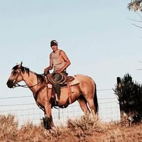
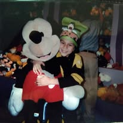
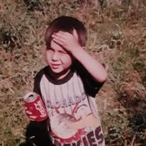

Memorial Gallery
Photos of Cole Stump and moments from our community advocacy efforts. Each image tells a story of remembrance and solidarity.
Cole's Memory and Community Advocacy

Cole Forrest Stump
Memory of Cole Forrest Stump, a 29-year-old father of five from the Chippewa-Cree Tribe, Rocky Boy Reservation.

Community Support
Community members gathering to advocate for justice and accountability in Cole's case.
Advocacy in Action
Moments from advocacy events raising awareness for justice in Cole's case and MMIP issues.
Family Solidarity
Family members and supporters gathered to honor Cole's memory and demand accountability.
Remembrance Vigil
Candlelight vigil honoring Cole's life and the lives of Missing and Murdered Indigenous Persons (MMIP).
Justice Movement
Community demonstrations demanding justice, transparency, and accountability for Cole's death.
MMIP Awareness
Events raising awareness for Missing and Murdered Indigenous Persons alongside Cole's case.

Community Unity
Unified community response demanding justice and reforms to prevent similar tragedies.
Cole's Legacy
Cole's legacy of love and his impact on our community continues through advocacy and justice work.
Key Evidence Photos

Timeline Discrepancy
Screenshot of a Facebook post by "The Big J Show" (Oct 12, 10:05 PM) reporting heavy police presence near Rose Park Apartments.

Physical Evidence: Bike Pump & Wrench
Close-up photograph showing a bicycle pump tucked into Cole's waistband and an adjustable wrench on the pavement near his hand.
Share Your Memories
Do you have photos of Cole or moments from our advocacy efforts? We welcome submissions from community members, family, and supporters.
Photo Guidelines
- Photos should be respectful and appropriate for a memorial gallery
- Include photo credit and date if available
- Photos may be edited for size and quality
- All submissions are reviewed before being added
To submit photos for the gallery, please contact us through our main contact form or reach out directly to the advocacy team.